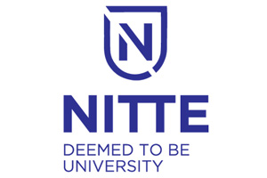

NITTE MAHALINGA ADYANTAYA MEMORIAL INSTITUTION OF TECHNOLOGY
NITTE UNIVERSITY
Nitte, SH1, Karkala, Karnataka 574110

The Department of Computer Science & Engineering, established in 1986, offers UG, PG and research (leading to M.Sc. and Ph.D.) programs. The Department practices outcome-based education since 2014. With state-of-the-art laboratories and other supporting facilities to provide enhanced learning environment, the Department boasts of well qualified teaching faculty with rich research, teaching and industrial experience.
The Department has excellent placement track record in reputed industries with an average of 80 – 85% placement of eligible students over the years. The Department regularly conducts audit courses, and special courses on advanced topics, to bridge the gap between the curriculum and the need of the industry. The Department offers M.Tech programs in Computer Science & Engineering and Cyber Security. From the year 2022-23 M.Tech program is under Nitte University.
Placement coordination team of the Department of Computer Science & Engineering takes the following measures towards campus placements:
Problem Solving Skills - Finding creative solutions for complex issues through HackerEarth that has 1000+ hackathons and 10,000+ programming challenges to date. Further through HackerRank a technology company that focuses on competitive programming challenges for both consumers and businesses (including Java, C++, PHP, Python, SQL, JavaScript).
Regular industry interactions to help students in career development, developing leadership qualities and make them aware of actual industry functioning prior to the placement drive.
Quality student workshops with resource persons from industries through Professional Societies.
The team Visits industries and invites new companies for recruitment in coordination with Placement Department of the institute. Number of core companies has significantly increased in the past few years.
Encourages students to take part in hackathons organized by various companies.
Assists students of other branches to learn programming skills through special classes on programming in coordination with Placement Department.
Facilitates alumni-institue interaction to connect to new companies.
Assists in project-based learning (PBL) to improve programming skills.
Arranges Special technical sessions required for specific core companies. For example, our faculty have trained the students on Network Security for the students aspiring placements in Sony India Pvt Ltd.